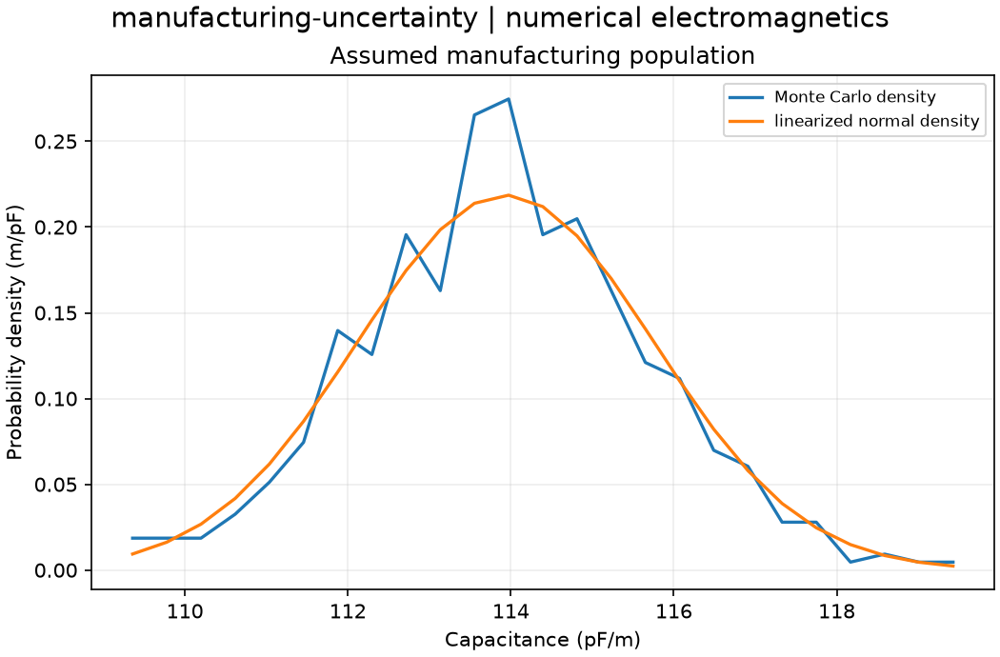

Reproducible numerical electromagnetics. Units and field components are printed on the scientific axes. Peak phasors use exp(+i omega t); outgoing waves use exp(-i k r).
Sealed numeric archive | Summary CSV | Physical parameters | Run request | Source and environment

| linearized_std_f_m | 1.8247389236561534e-12 |
|---|---|
| mean_ci95_high_f_m | 1.1406998774558923e-10 |
| mean_ci95_low_f_m | 1.1377065619975772e-10 |
| nominal_capacitance_f_m | 1.1393749424950568e-10 |
| population_p025_f_m | 1.1052926006780202e-10 |
| population_p975_f_m | 1.1727113964785653e-10 |
| sample_mean_f_m | 1.1392300066276091e-10 |
| sample_std_f_m | 1.723873361945954e-12 |
| std_relative_difference | 0.05527670857598594 |
These are simulations, not hardware measurements. Mesh, boundary, truncation and statistical uncertainty require distinct convergence checks. Singular or unilluminated data use explicit masks.
Source revision: 255b9ec965941d1fc97a04b9f7e2101e959fbeca.
Dirty checkout: False.
Configuration SHA-256: b0a084ae759457a19ca77cac46af2eb9a9dbaf151b19d7a2f472413ba3105d31.
Replay preserves original source and parameter provenance. SHA-256 manifests detect changed bytes; they are unsigned integrity records, not certificates of physical validity.